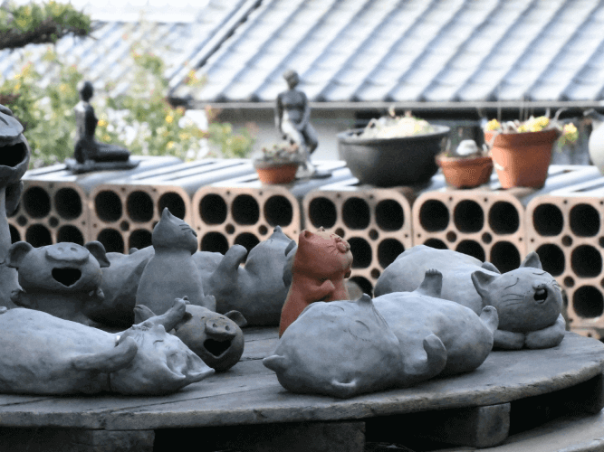
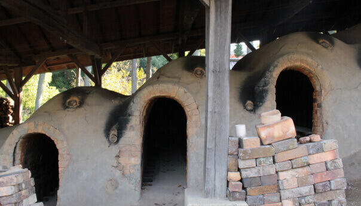

茗陶・匠心之作
我們將傳統陶窯技藝與現代藝術美感結合，讓每一件作品都訴說著自己的故事。在雙手塑形的過程中，陶土不僅成型，更凝聚了文化與情感，與你共度每一刻寧靜時光。

茗陶．吉祥陶貓

茗陶．鎮門陶龍
古韻陶窯・時間淬鍊的美學
每一次燒製，都是與自然的對話，每一件作品，都蘊含著時間沉澱後的質感與生命力。我們在這裡，延續傳統的溫度，也為每一位來訪者提供一場關於陶藝的深度體驗。
匠藝之美・生活的藝術
陶藝，不只是工藝品，更是能融入生活的藝術。無論是一個樸實的杯碗，或是一座細膩的裝飾雕刻，都是職人心血與匠心的展現。
讓陶器成為日常的一部分，在一杯茶、一頓飯、一個靜謐的午後，感受來自大地與雙手的溫潤質感。
讓陶器成為日常的一部分，在一杯茶、一頓飯、一個靜謐的午後，感受來自大地與雙手的溫潤質感。

燒陶熬